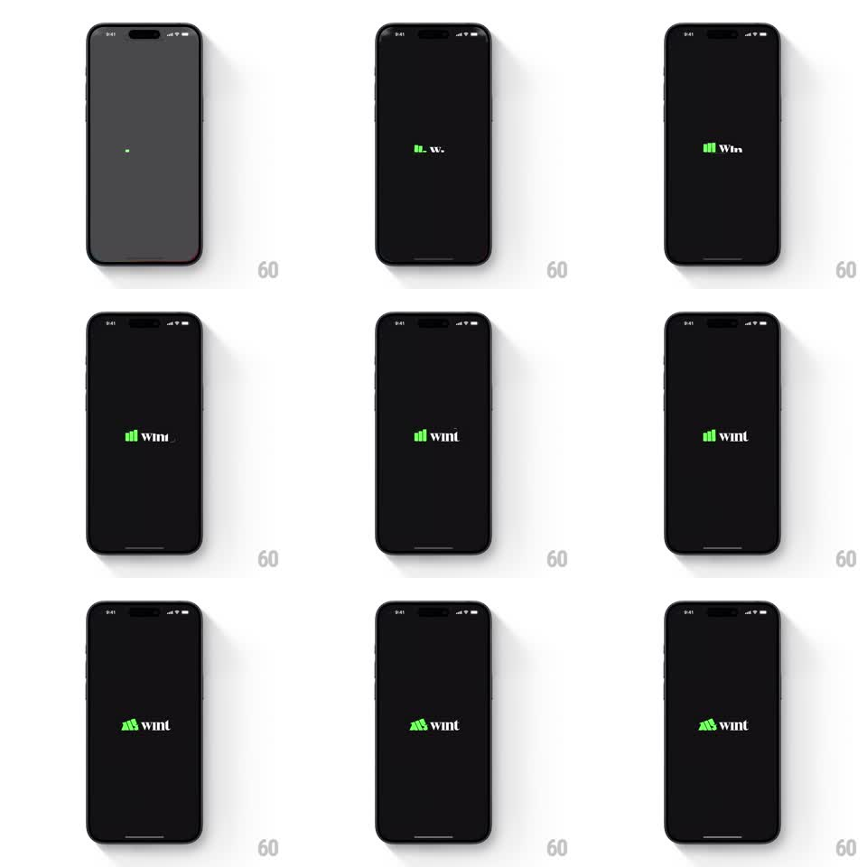

Media
Frame-by-frame

Rebuild this animation 1:1: WintWealth's splash - on black, a green bar chart grows bar by bar beside the typing "wint" wordmark, then the chart morphs into a raised fist.

Rebuild this animation 1:1: WintWealth's splash - on black, a green bar chart grows bar by bar beside the typing "wint" wordmark, then the chart morphs into a raised fist.
## Integration
Integration: stack-agnostic spec - springs given as stiffness/damping, timed motions as duration + curve; map every value to your framework and animation library of choice.
## Scene
Black screen. Center: the lockup - a green ascending bar chart glyph immediately left of the lowercase "wint" wordmark (green "w", white "int"). Sequence: a single green dot, bars rising, letters typing, then the bars morph into a fist shape.
## Motion spec
Pattern: bar-chart growth, typewriter wordmark, chart-to-fist morph.
- A tiny green dot glows at center-left (200ms), then the bars rise in ascending order (3 bars, 180ms each, 100ms apart, ease-out) to their chart heights.
- The wordmark types in beside the bars ("w" then "int", ~120ms/letter) with a brief green cursor.
- The bars then morph into the fist: the tallest bar bends into the raised thumb/knuckles, the shorter bars become fingers (path interpolation, 500ms, ease-in-out), settling as a solid green fist glyph.
- The lockup holds, then the whole splash fades to the app's first screen (300ms).
## Calibration
- Bar growth is per-bar with shared baseline - no scaling the whole chart.
- The fist morph keeps the exact green and silhouette weight of the bars; it reads as the same object transformed.
## Reduced motion
Logo fades in fully formed (250ms), no morph.
## Don't miss
- Only the "w" is green in the wordmark; "int" is white.
- The dot, bars, and fist occupy the same anchor point - the glyph never drifts left or right.